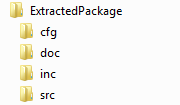

|
UNICENS V2.1.0-3564
User Manual and API Reference


|
The following figure shows the directory structure of the extracted source package. It is recommended to keep the folder structure as is. This will simplify version updates in future.

|
| Folder | Description |
|---|---|
cfg | Contains configuration files that can be customized by the user. |
doc | Contains the online documentation. |
inc | Contains the C header files. |
src | Contains the C source files. |
Data Types
Data types must be defined within the header file cfg/ucs_types_cfg.h. The easiest way to make the data types available is to include the standard library <stdint.h>. If the compiler does not provide this library the following data types must be defined by the application.
| Data Type | Definition |
|---|---|
int8_t | Signed integer, 8 bit |
int16_t | Signed integer, 16 bit |
int32_t | Signed integer, 32 bit |
uint8_t | Unsigned integer, 8 bit |
uint16_t | Unsigned integer, 16 bit |
uint32_t | Unsigned integer, 32 bit |
The data type size_t is required for results of sizeof() operations. Typically size_t is define in <stddef.h>.
| Data Type | Definition |
|---|---|
size_t | Result of sizeof() operator |
For boolean types the definition of bool has to be taken from <stdbool.h>. If this library is not available, the application has to define its own boolean data type based on an unsigned, 8-bit integer.
| Data Type | Definition |
|---|---|
bool | Unsigned integer, 8 bit |
In conjunction with boolean variables and constants the constants true and false must be used exclusively. These constants are also defined in <stdbool.h>. If the library is not available, the following macros must be defined by the application.
- Note
- If the library is compiled under C++ the definition of
bool,trueandfalsemust be adapted to the boolean data type used by that compiler.
Thread Safety
The library is not thread-safe. I.e., the configuration does not support the definition of mutexes and cannot handle calls from different thread contexts. Hence, the application has to ensure that the library is invoked correctly. This can be reached by the following approaches:
- The application must call the UNICENS API always from the same thread (recommended).
- The application must protect every UNICENS API call by mutexes or semaphores to avoid that concurrent threads access the API at the same time. Please note: API callback functions are invoked by ongoing API call. It is recommended to use context sensitive mutexes or to avoid further API calls from within an API callback function.
Static Configurations
The library provides some static configuration settings that must be specified at compile time. These settings are part of the file cfg/ucs_cfg.h and are pre-defined to default values. Hence, adjustment may be done when needed. The following settings are examples for the static configuration.
- Define the maximum number of API instances that are available within one process.
- Define the maximum number of remote nodes to be configured.
- Define the number of Tx and Rx application messages that can be processed at a moment and the according payload size per message.
- Enable/disable the library trace output.
Include Header File
To access the UNICENS API, the application must solely include the header file ucs_api.h.
64-bit Support
The UNICENS library is designed portable and thus supports also 64-bit systems. Platform dependent settings can be modified in the configuration files. Please check the following settings to ensure that the configuration files are well adopted for a 64-bit system:
- Check if data type definitions in
cfg/ucs_types_cfg.hare correct. - Check if
size_tis defined correctly. - If available, please include
<stdint.h>and<stddef.h>for the target system.